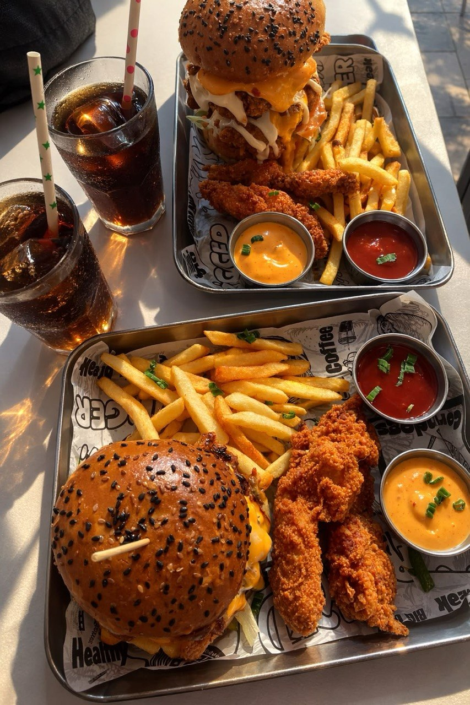
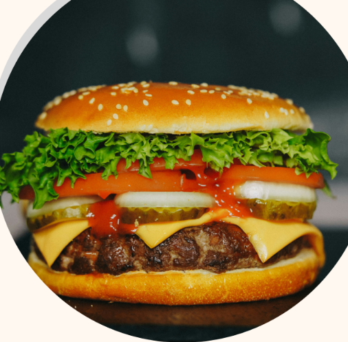
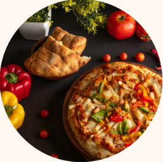
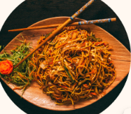
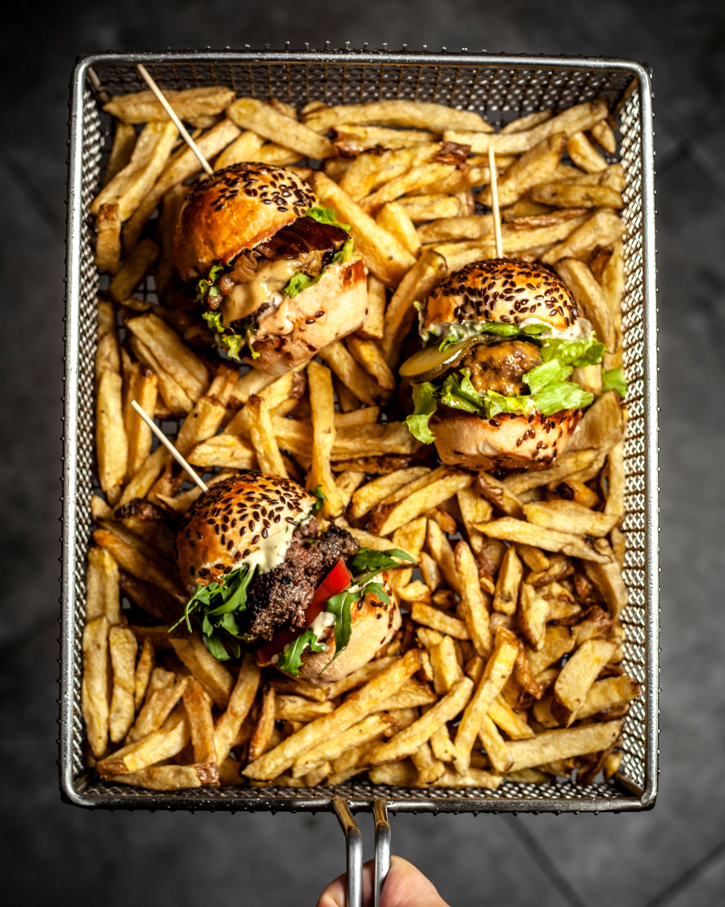
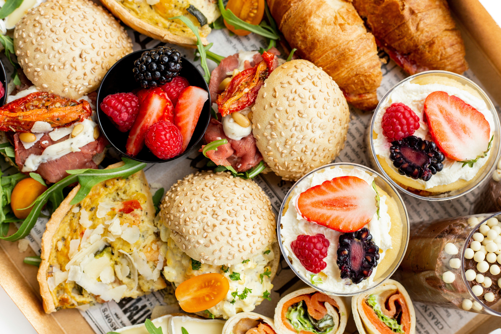
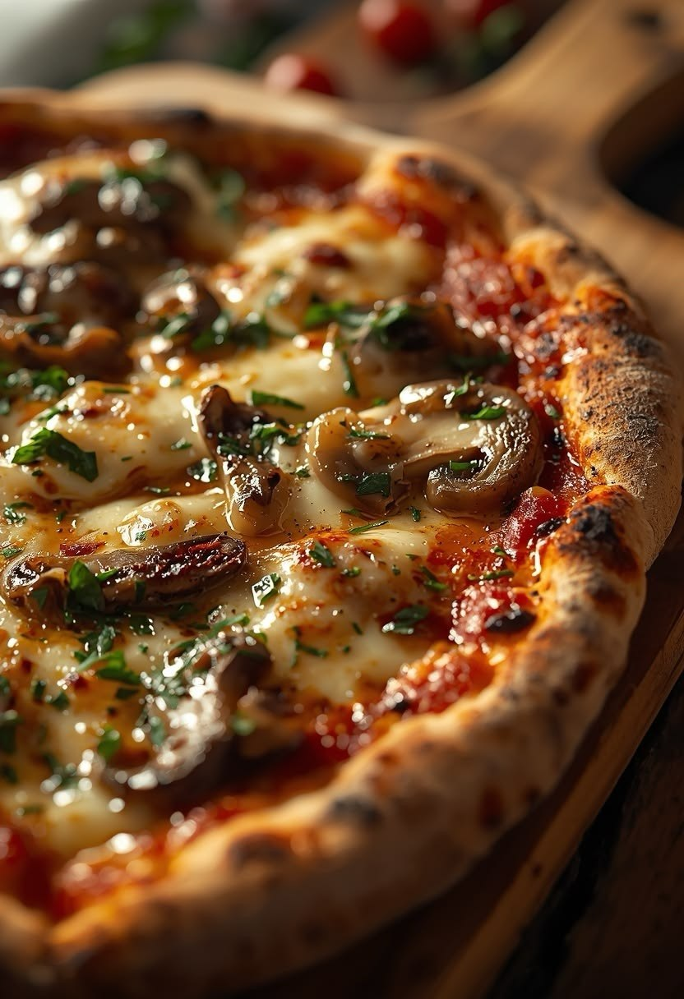
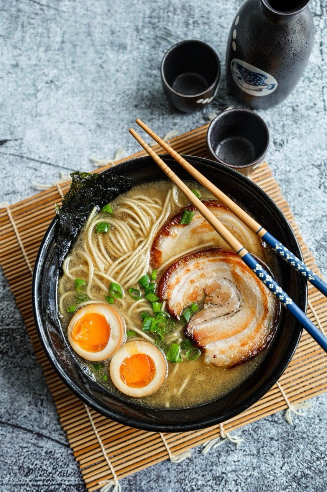
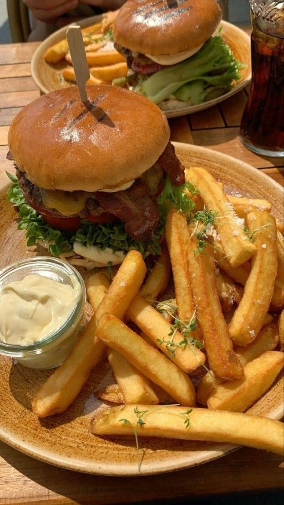
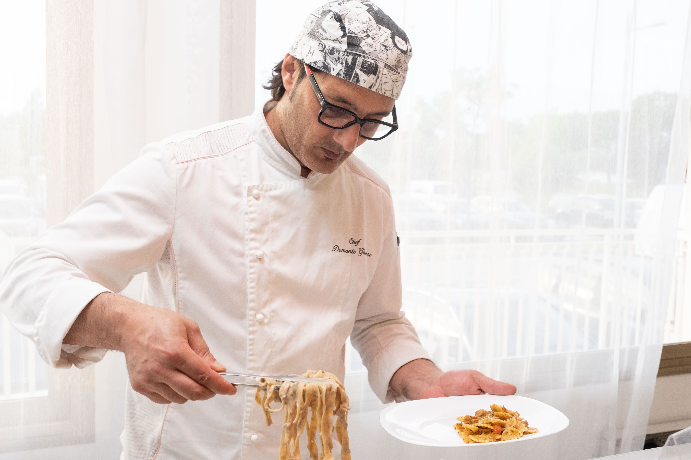

Find Great Food After 22:00 in Amsterdam
Discover restaurants and takeaway options for night-shift workers, students and night owls.
What would you like to eat?





Popular Late-Night Spots



Explore Amsterdam by neighbourhood
About Us

Amsterdam is a city that never truly sleeps. Even after 22:00, people are still working, studying, travelling and enjoying the nightlife. Finding a good place to eat late at night can sometimes be difficult.
Late-Night Food Amsterdam helps night-shift workers, students, tourists and local residents discover restaurants and takeaway options serving food late in the evening.
Whether you are craving a burger, freshly baked pizza, Asian food or a budget-friendly snack, explore our food categories and find something that matches your preferences.
Explore neighbourhoods including Centrum, De Pijp, West, Oost and Noord, with restaurant locations and directions to help you plan your visit.
Learn More